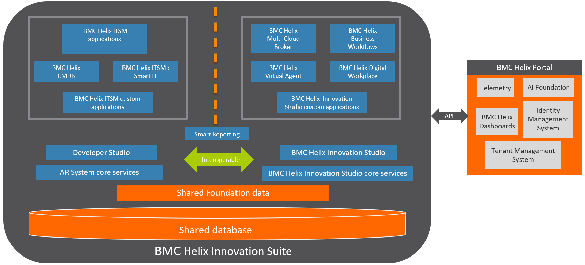
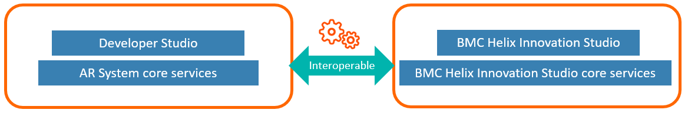

Product overview
BMC has consolidated Service Management applications into a single environment known as BMC Helix Innovation Suite . BMC Helix Innovation Suite simplifies administration, provides new development capabilities, improves the ability to interoperate between applications, and reduces operational costs.
BMC Helix Innovation Suite provides a framework for non-programmers to leverage modern architectural and AI/ML technologies, and helps develop, build, deploy, and use applications on cloud (SaaS) and on-premises.
Key highlights of BMC Helix Innovation Suite are:
Interoperability between Action Request System and BMC Helix Innovation Studio. For example, you can call a process, defined by using BMC Helix Innovation Studio in Action Request System. The process is called by triggering a filter written in Developer Studio.
Use applications built in BMC Helix Innovation Studio, or build a custom application by using BMC Helix Innovation Studio.
Use the Action Request System components and clients. You can leverage BMC Helix ITSM applications, or build a custom application by using Developer Studio.
Advantages of BMC Helix Innovation Suite
Foundation data is common to all applications: BMC Helix ITSM applications and BMC Helix Innovation Studio. BMC Helix Innovation Studio applications can directly use common Foundation data without the Foundation sync utility. For more information, see Loading Foundation data by using Data Management.
The BMC Helix Innovation Suite uses a common database for AR System, BMC Helix Innovation Studio, and BMC Digital Workplace.
The BMC Helix Innovation Suite offers interoperability between AR System and BMC Helix Innovation Studio. For example, you can call a process, defined by using Innovation Studio in AR System with a filter written by using Developer Studio.
For more information, see How to automate notification for issue assignment on BMC Helix Innovation Suite.Artificial intelligence (AI) powered services such as BMC Helix Virtual Agent are available for on-premises user.
The following diagram shows that BMC Helix ITSM and BMC Helix Innovation Studio applications reside on a BMC Helix Innovation Suite :

Interoperability on BMC Helix Innovation Suite
BMC Helix Innovation Suite enables you to interoperate between AR System and BMC Helix Innovation Studio. For example:
You can build an application that uses a filter developed in Developer Studio to trigger a process designed in BMC Helix Innovation Studio.
You can build an application that leverages data from AR System forms, including BMC Helix ITSM application form data and Foundation data.
You can embed a progressive view in a BMC Helix Innovation Studio application.
The following diagram shows the interoperability between AR System and BMC Helix Innovation Studio on BMC Helix Innovation Suite :

Common Foundation data for BMC Helix ITSM applications and BMC Helix Innovation Studio applications
As an administrator, you can use a common shared Foundation data structure of Person, Organization, Location, Categorization, and Geography for multiple applications such as BMC Helix Business Workflows and BMC Helix Virtual Agent built on BMC Helix Innovation Studio along with current applications.
The common unified Foundation data provides the following benefits:
A single data source for all the applications on the BMC Helix Innovation Suite .
BMC Helix Innovation Studioapplications can directly use common Foundation data without the Foundation sync utility.
No need to normalize data between applications.
For more information, see Setting up and modifying Foundation data by using Application Administration Console.
BMC Helix Innovation Suite business value
BMC Helix Innovation Suite provides a framework for non-programmers to leverages modern architectural and AI/ML technologies, and helps develop, build, deploy, and use applications on cloud (SaaS) and on-premises.
The following table describes how you can use the BMC Helix Innovation Suite to address your business needs.
|
Business need |
Product |
|
Design or customize a service management application |
|
|
Enable access to BMC Helix Innovation Suite through a browser |
|
|
Automate any approval or signature process across organization. |
|
|
Instruct the BMC Helix Innovation Suite to perform queries, submissions, or modifications to entries, all using email. |
|
|
Provides a search mechanism that is typically much faster than the native database functionality for searching in long text fields. |
|
|
Store and manage the configuration items (CIs) that represent your IT environment and transfer data between an external datastore and CMDB. |
|
|
Enable the BMC Helix Innovation Suite and its clients to communicate securely over a network by encrypting the messages sent between them. |
|
|
(For On-premises deployments only) |
Service Management applications supported by BMC Helix Innovation Suite
BMC Helix Innovation Suite supports Developer Studio based applications and BMC Helix Innovation Studio based applications. This also includes artificial intelligence (AI) powered services such as BMC Helix Virtual Agent .
You can use or customize these applications as per your business requirements. Additionally, you can use the application development environments: Developer Studio and BMC Helix Innovation Studio to build custom applications.
See the following list of service management applications supported by BMC Helix Innovation Suite :